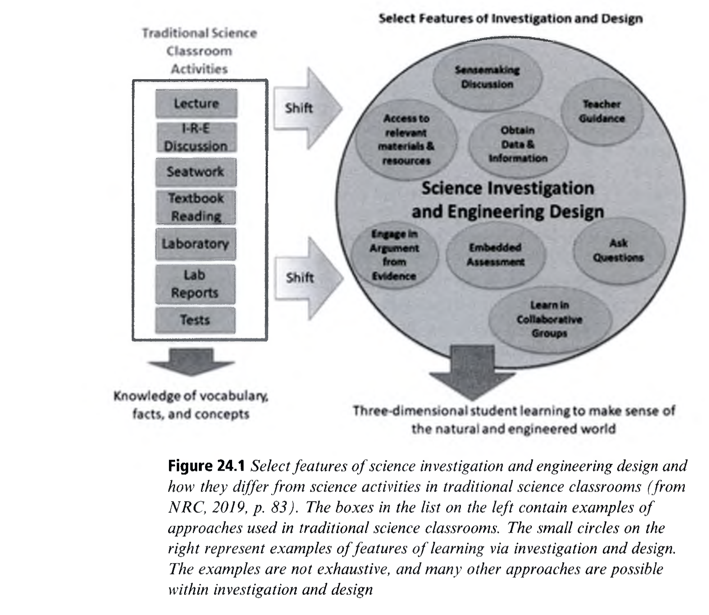

Science Education and the Learning Sciences
과학교육과 학습과학: 공진화하는 두 학문의 역사와 미래 — 3차원 탐구 학습에서 네트워크 시민 리터러시로
👥 저자 및 출처
Nancy Butler Songer (Drexel) & Yael Kali (Univ. of Haifa)
『The Cambridge Handbook of the Learning Sciences』 (3rd Ed., 2022, pp. 490–511)
🎯 챕터 핵심 아젠다 (24.0 ~ 24.5)
- 24.0 50년 공진화: 지식 통합, 스캐폴딩, DBR의 산실
- 24.1 지식 통합 (Knowledge Integration) 프레임워크
- 24.2 NGSS 3차원 학습 (실천 SEP + 개념 DCI + 횡단 CCC)
- 24.3 탐구·공학 설계 (Figure 24.1) & BioKIDS / WISE
- 24.4 네트워크 사회의 포용성 & 가짜 뉴스 대응 시민 과학
🎯 강의 목표 및 핵심 맥락 (Context & Goal)
본 장은 과학교육과 학습과학이 지난 50년간 어떻게 상호 영향을 주고받으며 공진화(Co-evolution)해 왔는지 밝히고, NGSS 3차원 학습과 지식 통합(Knowledge Integration)의 원리를 정립합니다.
📖 원문 심층 학술 해설 (Detailed Academic Commentary)
낸시 버틀러 송거 교수(BioKIDS 개발자)와 야엘 칼리 교수(TELS/WISE 지식 통합 설계자)는 과학교육 테크놀로지 및 커리큘럼 디자인 연구의 세계적 권위자들입니다.
💡 수업/세미나 진행 팁 & 질문 가이드
"왜 교과서에 나오는 '요리책 실험(Cookbook lab)'은 학생들의 실제 과학적 사고력을 길러주지 못할까요?"라는 질문으로 시작하세요.
24.1 과학 지식의 상황성과 지식 통합 (Knowledge Integration)
오개념을 지우는 것이 아니라, 아이디어를 도출·추가·구별·통합하는 동적 과정 (Linn & Eylon)
1. 도출 (Elicit)
일상 경험에서 나온 학생들의 직관적 아이디어 레퍼토리를 자유롭게 표출
2. 추가 (Add)
시뮬레이션과 실험을 통해 과학적으로 타당한 새로운 증거와 개념 추가
3. 구별 (Distinguish)
상충하는 아이디어들을 증거에 입각하여 비교하고 조건별로 세분화
4. 통합 (Reflect)
반성적 숙고를 통해 다양한 현상을 설명하는 일관된 개념 네트워크로 통합
🎯 강의 목표 및 핵심 맥락
24.1절의 마샤 린과 엘론(Linn & Eylon)의 '지식 통합(Knowledge Integration)' 프레임워크 4단계를 설명합니다.
📖 원문 심층 학술 해설
전통 교육은 학생의 직관을 '틀린 오개념'으로 규정하고 지우려 했으나, 지식 통합론은 직관적 아이디어가 학습의 귀중한 출발점(Starting resources)임을 강조합니다.
💡 수업/세미나 진행 팁 & 질문 가이드
TELS와 WISE 플랫폼이 어떻게 컴퓨터 시뮬레이션으로 증거를 제공하는지 연결하세요.
24.2.1 과학 교육과정의 패러다임 전환: 1996 NSES vs 2013 NGSS
내용(지식)과 탐구(스킬)를 분리하던 시대에서 융합된 3차원 수행 기대로의 도약
📜 과거: 1996 NSES (분리형 표준)
- 지식과 탐구의 이원화: 내용 표준(Content Standard)과 탐구 표준(Inquiry Standard)이 별도로 서술
- 한계: 교과서 사실 암기 수업과 절차적 실험이 따로따로 진행됨
🚀 혁신: 2013 NGSS (3차원 통합 표준)
- 3-Dimensional Learning: 과학 실천(SEP) + 핵심 개념(DCI) + 횡단 개념(CCC)의 완벽한 융합
- 수행 기대(PE): "생태계 변화가 개체군에 미치는 영향을 증거 기반 논증으로 구성하라"
🎯 강의 목표 및 핵심 맥락
24.2절의 Table 24.1에 제시된 미국 국가 과학 표준의 역사적 전환(1996 NSES ➔ 2013 NGSS)을 분석합니다.
📖 원문 심층 학술 해설
NGSS의 획기적인 점은 학생이 무엇을 '알고 있는가'가 아니라, 개념을 활용하여 무엇을 '수행(Perform)할 수 있는가'로 표준을 재정의한 것입니다.
💡 수업/세미나 진행 팁 & 질문 가이드
우리나라 2022 개정 과학과 교육과정의 핵심 아이디어 및 탐구 실천과 비교해 보세요.
24.2.2 NGSS 3차원 학습 (3D Learning) 입체 구조
과학·공학 실천(SEP) × 교과 핵심 개념(DCI) × 횡단 개념(CCC)의 상호작용 (NRC, 2013)
1. 과학·공학 실천 (SEP)
질문하기, 모델 개발, 증거 기반 논증, 데이터 분석 및 해석 등 8대 과학 실천
2. 교과 핵심 개념 (DCI)
물리, 생명, 지구우주, 공학 기술 영역의 가장 핵심적인 원리와 불변의 빅 아이디어
3. 횡단 개념 (CCC)
원인과 결과, 패턴, 시스템과 모델, 구조와 기능 등 모든 과학 분과를 관통하는 렌즈
🎯 강의 목표 및 핵심 맥락
24.2절과 Table 24.2의 NGSS 3차원 학습(3D Learning) 아키텍처를 상세히 설명합니다.
📖 원문 심층 학술 해설
3차원 학습은 줄타기와 같습니다. 세 줄(실천, 개념, 횡단)이 꼬여 하나의 굵은 밧줄이 될 때 학생들은 과학자처럼 사고할 수 있습니다.
💡 수업/세미나 진행 팁 & 질문 가이드
이어지는 슬라이드에서 이를 실천하는 교실 탐구와 공학 설계(Figure 24.1)를 살펴봅니다.
24.3 교실에서의 과학 탐구와 공학 설계 (Figure 24.1)
요리책 실험에서 실제 자연 현상(Phenomena) 기반 가설 검증 및 공학적 프로토타이핑으로
🔍 연구 기반 과학 교실의 특징
- 현상 기반 시작: 설명되지 않는 자연 현상이나 사회적 공학 딜레마에서 출발
- 증거 기반 모델링: 학생 스스로 데이터를 수집하고 인과 관계를 시뮬레이션
- 공학 설계 루프: 문제 정의 ➔ 설계 ➔ 테스트 ➔ 반복 개선(Iterate)

🎯 강의 목표 및 핵심 맥락
24.3절의 핵심 도판인 Figure 24.1(전통 과학 수업과 연구 기반 탐구/공학 설계의 대조)을 분석합니다.
📖 원문 심층 학술 해설
NRC(2019) 보고서 기반: 전통 과학 수업은 교사가 정답을 알려주고 학생이 확인하는 반면, 혁신적 과학 교실은 학생들이 실제 증거를 바탕으로 지식을 스스로 구축합니다.
💡 수업/세미나 진행 팁 & 질문 가이드
학생들에게 도판을 확대하여 보게 하고, 좌측의 전통 방식과 우측의 탐구 실천 차이를 설명하세요.
24.3.1 BioKIDS와 WISE: 테크놀로지 기반 탐구 커리큘럼
모바일 센서 야외 탐구(BioKIDS)와 컴퓨터 시뮬레이션 지식 통합(WISE) (Songer, 2006; Linn)
🌿 BioKIDS 프로젝트 (Songer, 2006)
- 모바일 핸드헬드 기기를 들고 학교 숲의 생물 다양성 데이터 수집
- 수집된 동물/식물 데이터를 기반으로 생태계 먹이사슬 인과 관계 모델링
- 도시 소외지역 학생들의 복합 추론(Complex Reasoning) 발달 입증
💻 WISE & TELS 환경 (Kali et al., 2008)
- 분자 열운동, 온실 효과 등 비가시적 과학 현상을 동적 시뮬레이션으로 조작
- '증거 바구니'에 데이터를 모아 과학적 논증 에세이 작성 스캐폴딩
🎯 강의 목표 및 핵심 맥락
24.3.1절에 제시된 대표적인 학습과학 기반 과학 탐구 시스템인 BioKIDS와 WISE를 다룹니다.
📖 원문 심층 학술 해설
테크놀로지는 단순히 책을 컴퓨터로 옮긴 것이 아니라, 학생들이 직접 데이터를 수집하고 비가시적 미시 세계를 조작할 수 있는 '인지적 어포던스'를 제공합니다.
💡 수업/세미나 진행 팁 & 질문 가이드
야외 모바일 탐구와 실내 가상 시뮬레이션의 결합 방안을 논의하세요.
24.4 네트워크 사회의 과학: 시민 과학과 가짜 뉴스 대응
기후 위기, 감염병, 허위 정보(Misinformation)에 맞서는 비판적 과학 리터러시 (Kali et al.)
🌐 시민 과학 (Citizen Science)과 형평성
- 소외계층 및 다문화 청소년이 실제 지역 환경 데이터 측정에 참여
- '모든 이를 위한 과학(Science for All)'을 실현하고 과학자 정체성 고양
🛡️ 허위 정보(Misinformation) 판별 역량
- 소셜 미디어에 떠도는 백신/기후 음모론에 대한 증거 기반 비판적 평가
- 출처의 신뢰성, 데이터의 통계적 타당성을 검증하는 시민적 소양 육성
🎯 강의 목표 및 핵심 맥락
24.4절의 과학 교육의 포용성(Equity)과 초연결 네트워크 사회에서의 비판적 과학 리터러시를 다룹니다.
📖 원문 심층 학술 해설
현대 사회에서 과학 교육은 미래 과학자 양성을 넘어, 민주시민이 일상적 건강과 환경 문제에 대해 합리적 결정을 내릴 수 있는 생존 기술입니다.
💡 수업/세미나 진행 팁 & 질문 가이드
유튜브나 틱톡의 유사과학 영상을 비판적으로 검증하는 수업 설계를 토론하세요.
24.5 Chapter 24 총괄 결론 & Chapter 25 역사 학습 예고
과학적 증거 검증에서 과거 사료의 비판적 해석, '역사 학습 연구(VanSledright)'로!
🌟 Ch 24 과학 학습 연구의 핵심 교훈
- 1. 과학교육과 학습과학은 지난 50년간 공진화해 왔다
- 2. 지식 통합: 도출 ➔ 추가 ➔ 구별 ➔ 반성적 통합
- 3. NGSS 3차원: 실천(SEP) + 핵심개념(DCI) + 횡단개념(CCC)
- 4. 현상 기반 탐구와 공학 설계 루프를 구현하라
🚀 Chapter 25 예고: 역사 학습 연구 (History Learning)
Bruce A. VanSledright & Margarita Limón
단일 교과서 암기에서 탈피! 상충하는 1차 사료(Primary Sources)의 출처 확인(Sourcing)과 역사적 사고력의 세계로!
🎯 강의 목표 및 핵심 맥락
Chapter 24(24.0~24.5)를 마무리하고 다음 Chapter 25(역사 학습 연구)를 예고합니다.
📖 원문 심층 학술 해설
Chapter 25는 과학의 경험적 데이터 검증과 대비되는 역사의 1차 사료 해석 및 관점주의 사고를 다룹니다.
💡 수업/세미나 진행 팁 & 질문 가이드
다음 Chapter 25로 나아갑니다.